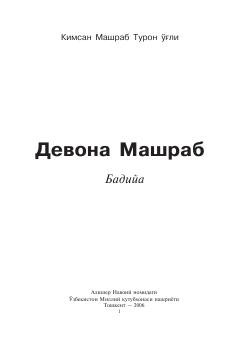

DMBoborahim Mashrab hayoti va fojiali taqdiriga bag'ishlangan badiiy qissa.
Ushbu asar o'zbek adabiyotining yorqin namoyandasi Boborahim Mashrab hayoti va ijodiga bag'ishlangan badiiy qissadir. Kitobda shoirning tasavvuf yo'lini tanlashi, fojiali taqdiri hamda xalq sevikli ijodkoriga aylangani ta'sirchan lavhalarda ochib berilgan.